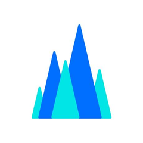

AI 风向标
14MB
AI 装进手表里
#01
端侧线 · 微型基础模型
14MB 装个 AI 大脑
cactus-compute / needle

一首歌
40MB
needle
14MB
手机、手表、智能家居直接装，离线就能跑的微型基础模型
14MB
离线跑
进设备
AI装进手表里
#02
端侧线 · 本地训练台
家里电脑训AI
unslothai / unsloth
1点开界面
→
2选模型
→
3专属版本
主流开源大模型在家调教，图形界面点几下就出你的专属版本
7.4万星
图形界面
免云租
训练台搬回家
#03
端侧线 · Mac 推理
菜单栏管大模型
jundot / omlx

为 Mac 芯片打造的大模型推理服务，从菜单栏一键管理
菜单栏
本地推理
批量跑
Mac变私人机房
#04
靠谱线 · 全网调研
AI替你做调研
mvanhorn / last30days-skill
瞎猜
张口就来
→
查证
带着出处
装上技能，AI 先去各大社区、视频平台翻真实讨论，再带出处写总结
全网调研
带出处
一装即用
AI从瞎猜变查证
#05
靠谱线 · 文档预处理
文档变AI口粮
docling-project / docling
PDF · 表格
读不利索
→
读不利索
AI 口粮
张口就能消化
张口就能消化
文档丢进去，转成 AI 就绪格式，喂给 AI 前的最后一道工序
6.5万星
全格式
AI就绪
文档先喂对再问AI
本期线索链

OpenViking
给 AI 装上会进化的记忆底座
2.9万★
你更想要哪个？
手表里的 AI
needle · 14MB 端侧
?
家里训的 AI
unsloth · 图形界面
关注我，下期见